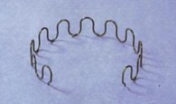
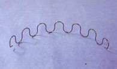

| Sinuous Spring |
| Non woven |
| Fiber Pad |
| Gas Spring |
| Sofa Sleeper |
| Sofa Fittings |
| Sofa Legs |
| Sofa Webbing |
Sinuous Springs
CAMAC sinuous spring is approved with good quality by local sofa manufacturers. Electrophoresis surface treatment makes the spring better anti-rust protected. Assured high quality wire and well tempered, no sag spring, no break. Packing in wooden case and carton are available now for different customers' needs.
| Article # | Wire dia. | Loops | Length |
|---|---|---|---|
| ga8-27-12 | gauge 8 | 12 | 27" |
| ga8-26-11 | gauge 8 | 11 | 26" |
| ga8-25-11 | gauge 8 | 11 | 25" |
| ga8-24-10 | gauge 8 | 10 | 24" |
| ga8-23-10 | gauge 8 | 10 | 23" |
| ga11-27-12 | gauge 11 | 12 | 27" |
| ga11-26-11.5 | gauge 11 | 11.5 | 26" |
| ga11-24-11 | gauge 11 | 11 | 24" |
| ga11-24-10.5 | gauge 11 | 10.5 | 24" |
| ga11-21.5-10 | gauge 11 | 10 | 21.5" |
| ga11-21-10 | gauge 11 | 10 | 21" |
|  |

|
|  |